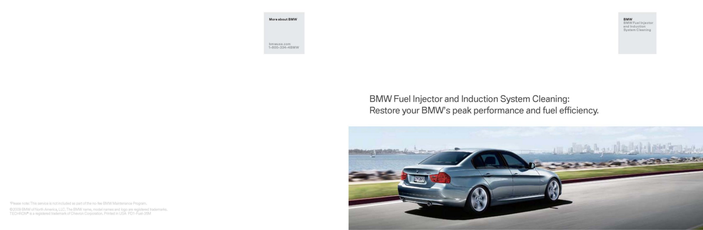
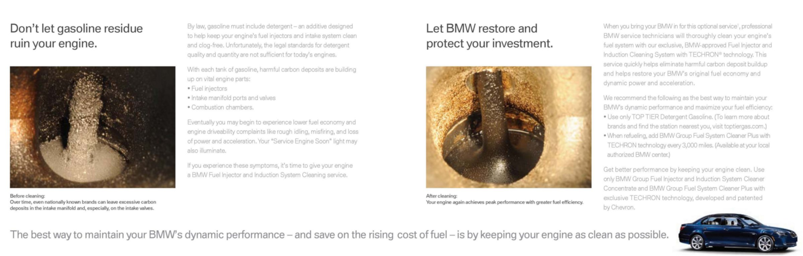

Fuel System - Fuel/Induction System Cleaning Information
SI B 13 06 09Fuel Systems
June 2009
Technical Service
SUBJECT
Fuel Injection and Induction System Cleaning - Customer Information Brochure
MODEL
All with port injection systems including:
E46 (3 Series) vehicles equipped with M54 or M56 engines
E46 (M3) vehicles equipped with S54 engines
E53 (X5) vehicles equipped with M54 engines
E53 (X5) vehicles equipped with N62 engines
E82 and E88 (1 Series) vehicles equipped with N52K engines
E83 (X3) vehicles equipped with M54, N52 or N52K engines
E85 and E86 (Z4) vehicles equipped with M54, N52 or N52K engines
E60 (5 Series) vehicles equipped with N62 or N62TU engines
E63 and E64 (6 Series) vehicles equipped with N62 or N62TU engines
E65 and E66 (7 Series) vehicles equipped with N62 or N62TU engines
E70 (X5) vehicles equipped with N52K engines
E70 (X5) vehicles equipped with N62TU engines
E90, E91, E92 and E93 (3 Series) vehicles equipped with N51, N52 and N52K engines
SITUATION
In recent years, experiences in the field have shown a significant increase in various drivability complaints, due to variations in fuel quality offered by different manufactures in the US. In general, the
quality of gasoline is determined by many factors, with the percentage of alcohol (mainly ethanol) and the level of detergent additives becoming the key contributors.
Lower levels of detergent quality and quantity may cause harmful carbon deposits to build up on vital engine components like fuel injectors, intake manifold ports and valves, and inside combustion chambers.
The excessive carbon deposits eventually may reduce fuel economy, lower engine performance and may lead to various drivability complaints, e.g., misfire, rough idling and Service Engine Soon lamp illumination.
To prevent such conditions by keeping the engine intake system as clean as possible, BMW NA recommends an optional (customer payment basis) "Fuel Injection and Induction Cleaning with TECHRON(R) technology" to be performed as a preventive measure. Please refer to SI B13 01 07
(March 2009), found in BMW TIS, for the Injection and Induction Cleaning System tools and procedures.
In order to help you explain fuel quality and carbon deposit-related topics to your customers, BMW NA has published a customer brochure: "BMW Fuel Injection and Induction System Cleaning: Restore your BMW's peak performance and fuel efficiency". A copy of this brochure is attached.
It is available from Harte Hanks at 609-409-2737 or via CenterNet under Aftersales/Marketing materials (item BMW-PD1-Fuel-35M; cost $0.00; max. order 50).
This new brochure, combined with "Beyond Octane How additives in gasoline are affecting your BMW performance" (already available), provide you with extremely important and useful information on gasoline quality and its influence on vehicles' drivability.
Make sure to use this information to educate your BMW owners.
WARRANTY INFORMATION
Performing the BMW Group Fuel Injection and Induction System Cleaning is not covered under the terms of the BMW New Vehicle Limited Warranty, maintenance plan or extended CPO coverage, since carbon deposit buildup is related to a substandard fuel quality; it is not considered to be a defect in a vehicle's materials or workmanship.
ATTACHMENTS


view PDF attachment B130609Customer_Brochure

Disclaimer